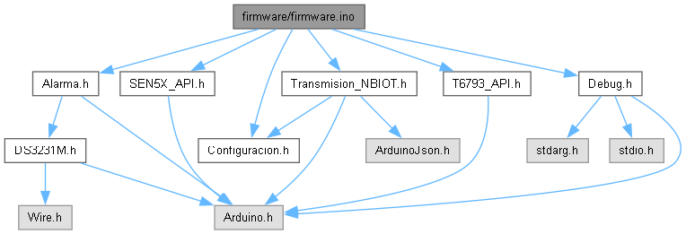

Código principal para un sistema de monitoreo de calidad del aire ("Airlink"). More...
Este programa integra lecturas de diversos sensores y gestiona su funcionamiento a través de temporizadores no bloqueantes (millis). Incluye módulos opcionales para transmisión de datos por NB-IoT y para detección de tos mediante Edge Impulse.

Macros | |
| #define | DEBUG_TAG "MAIN" |
| Etiqueta al enviar mensajes de depuración. | |
Functions | |
| void | setup () |
| Inicializa las comunicaciones, los sensores y los módulos del sistema. Se ejecuta una sola vez al encender o reiniciar el microcontrolador. | |
| void | loop () |
| Se ejecuta repetidamente después de que setup() ha terminado. Es el corazón del programa, donde se comprueban y ejecutan las tareas periódicas. | |